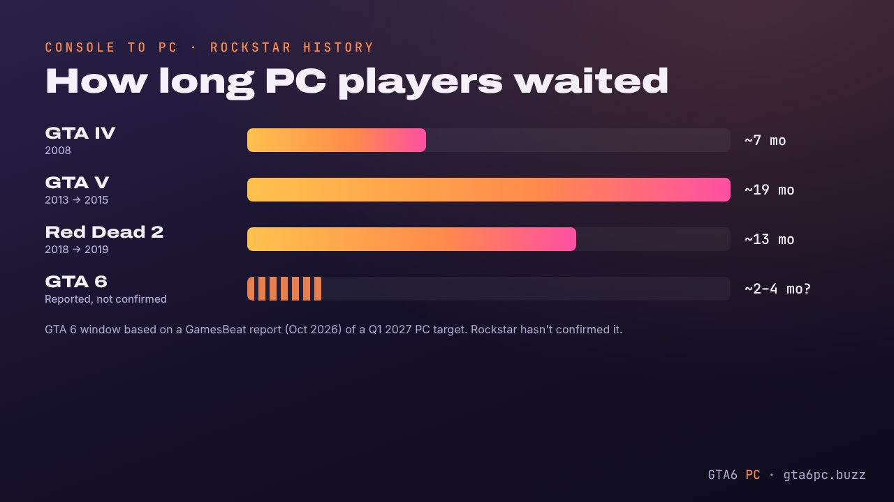

When is GTA 6 coming to PC?
GTA 6 launched on consoles on November 19, 2026. PC players are still waiting, and Rockstar hasn't said for how long. Here's everything that's actually known.

What Rockstar has officially said
Rockstar has only ever announced GTA 6 for PlayStation 5 and Xbox Series X|S. The game went through two delays before it shipped: first from 2025 to May 26, 2026, then to November 19, 2026, when it finally launched on both consoles.
No PC version, PC store page or PC system requirements have been announced. Until Rockstar posts something on its own site, any exact PC date you see online is a guess.
The Q1 2027 report
On October 13, 2026, GamesBeat reported that Rockstar plans to bring GTA 6 to PC in the first three months of 2027. The outlet cited four industry sources who asked not to be named. Rockstar didn't comment on the report.
That makes Q1 2027 the most specific window in circulation. Treat it as a strong rumor, not a date. Plans like this can move, and GTA 6 has already slipped twice.
What Rockstar's history suggests
Rockstar has a long habit of launching on consoles first and bringing the PC version later. Here's how long PC players waited for its last three big releases:
| Game | Console launch | PC launch | Wait |
|---|---|---|---|
| GTA IV | April 2008 | December 2008 | ~7 months |
| GTA V | September 2013 | April 2015 | ~19 months |
| Red Dead Redemption 2 | October 2018 | November 2019 | ~13 months |
| GTA 6 | November 19, 2026 | Not announced | Q1 2027 would be ~2–4 months |

If the Q1 2027 report is right, this would be the shortest console-to-PC gap Rockstar has ever had. If Rockstar sticks to its usual pattern, late 2027 is more likely.
Where the announcement will come from
Rockstar announces release dates on the Rockstar Newswire and its official social accounts. Store pages on Steam, the Epic Games Store and the Rockstar Games Launcher usually appear around the same time.
Be careful with "GTA 6 PC download" sites
A leaked Xbox build started circulating around the console launch, and sites offering GTA 6 PC downloads, installers or "ports" followed right behind it. There is no legitimate way to play GTA 6 on PC yet. Those downloads are at best unofficial and at worst malware. We cover this in more detail in our GTA 6 PC leak explainer.
What Take-Two said on November 9
Take-Two reported its fiscal second-quarter results on November 9, 2026, ten days before launch. Pre-orders were "far in excess" of the company's initial expectations, according to chief executive Strauss Zelnick. On the earnings call that evening, Zelnick was asked about a PC version, a Switch 2 version and streaming, and he gave no date. His answer, reported by several outlets, was that information about new versions always comes from Take-Two's labels, meaning Rockstar. Any PC announcement will come from Rockstar itself, not from Take-Two's investor calls.
The Q1 2027 report still stands. GamesBeat updated its October 13 report on November 18, and the window still reads the first quarter of 2027. But there is a point against it too: Take-Two's own fiscal 2027 release table, which runs to March 31, 2027, lists no PC version of GTA 6, and a January to March launch would fall inside that year. The next official checkpoint is Take-Two's third-quarter call, expected around early February 2027.
Could the leak bring the PC date forward?
South Korean outlets covering the leak have raised the idea. Chosun Biz reported on November 25 that the leaked Xbox build raises the prospect of an unofficial PC version, and that some expect Rockstar to bring the official PC release forward to the first quarter of next year. Aju Press made the same point the same day, noting that an unofficial version could reach PC-heavy markets long before any official release.
That is speculation, not a report of a decision, and nothing official supports it. Rockstar and Take-Two have said nothing about changing their plans because of the leak. There is an older hint pointing the same way, though. In February 2025, Corsair Gaming chief executive Andrew Paul told investors he expected GTA 6 to arrive in early 2026, when the console game was still targeting autumn 2025. The console launch slipped a year, but Wccftech notes the logic still fits: the industry has expected a fast PC release for a while. VGC's Andy Robinson has also said rising console prices are pressuring Rockstar to get the PC version out earlier than usual. None of that is a date, but it explains why the Q1 2027 window keeps coming up.
Quick answers
Is GTA 6 on Steam?
Not yet. Rockstar hasn't announced any PC store listing.
Can I pre-order GTA 6 for PC?
No. There's no official PC pre-order. Any site taking PC pre-orders right now isn't selling a real product.
Will my console save carry over to PC?
Rockstar hasn't said. When GTA V moved to PC, players could transfer their GTA Online progress, but nothing is confirmed for GTA 6.
When is GTA 6 coming to PC?
There is no official date. Rockstar has only announced GTA 6 for PlayStation 5 and Xbox Series X|S. A GamesBeat report from October 13, 2026 says Rockstar is aiming for the first quarter of 2027, but Rockstar has not confirmed it.
What did Take-Two say about a PC version on November 9?
On the November 9, 2026 earnings call, chief executive Strauss Zelnick was asked about PC and other platforms and said information about new versions always comes from Take-Two's labels, meaning Rockstar. He gave no date and announced nothing.
Could the leak bring the PC version forward?
Some commentators in South Korea have suggested the Xbox build leak could push Rockstar to release the PC version earlier, but that is speculation. Nothing official supports it, and Take-Two's release table through March 2027 lists no PC version.
Is the Q1 2027 window reliable?
It is the most specific window in circulation, from four anonymous industry sources cited by GamesBeat, and the outlet stood by it in a November 18 update. It is still a report, not an announcement, and GTA 6 has already slipped twice.
Where will the PC date be announced?
Rockstar announces release dates on the Rockstar Newswire and its official social accounts. Store pages on Steam, the Epic Games Store and the Rockstar Games Launcher usually appear around the same time.
Last updated . We update this page when Rockstar announces anything new.
Sources
- GamesBeat: Grand Theft Auto VI's PC release is slated for Q1 2027
- VGC: GTA 6 PC release date guide
- PCWorld: We guessed late 2027 for GTA 6 on PC, a report says Q1 2027
- Yahoo Tech: GTA 6 PC release date
- VGC: The PC version of GTA 6 is reportedly coming before the end of March 2027
- Chosun Biz: GTA 6 leak raises prospect of unofficial PC port and earlier official release
- Aju Press: Hacker leak opens door to unofficial GTA 6 PC port
- Wccftech: Corsair CEO's early GTA 6 PC release hint looks prescient
- Hone: GTA 6 PC release date, November 9 earnings call
- Sixshore: Take-Two says GTA 6 pre-orders are far above its expectations